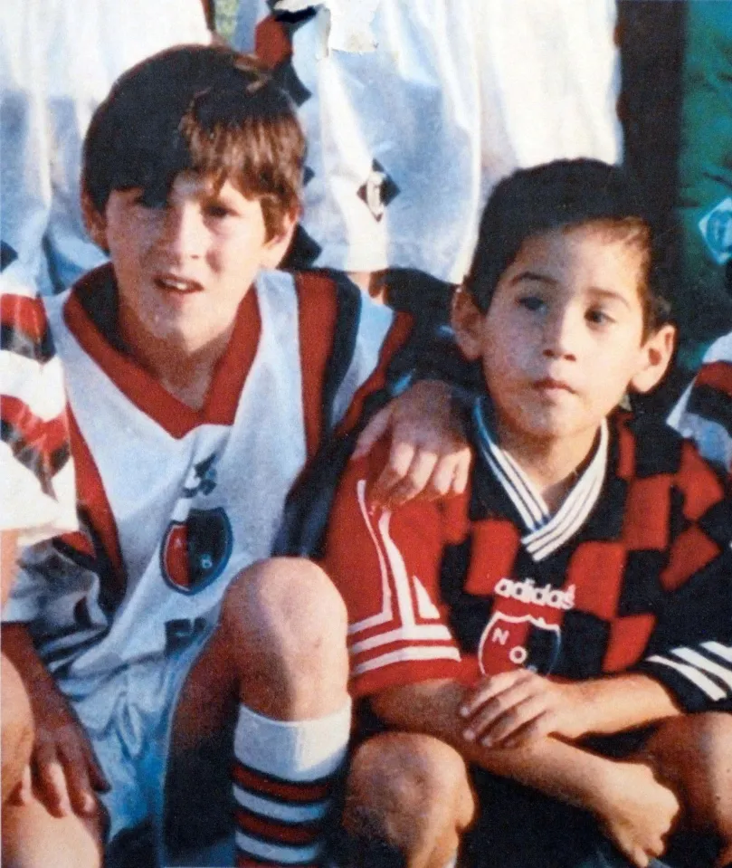

The Journey of a Small boy who changed the World of football
Messi was a dreamer, a young explorer with a heart full of curiosity. From the rolling hills of his small town to the vast starry skies, he always sought something more, something beyond the horizon. Hir journey began on a crisp autumn morning when he was sent to the Barcelona football academy, with the scent of adventure in the air and a backpack full of dreams.
Before that Messi was tagged along when his two older brothers played soccer with their friends, unintimidated by the bigger boys. At the age of 8, he was recruited to join the youth system of Newell's Old Boys, a Rosario-based club.
At age 13, Messi signed with FC Barcelona. His first appearance for the team was when he was 16. On May 1, 2005, Messi put himself in the record books as the youngest player to ever score a goal for the franchise. Messi became the first Argentinian player to win the Ballon d’Or. Even the great Maradona gushed about his fellow countryman. “I see him as very similar to me,” the retired player told the BBC. “He’s a leader and is offering lessons in beautiful football. He has something different than any other player in the world.”.
Amazingly, the soccer wizard continued to improve, After helping Barcelona achieve a historic second treble in 2015, he was honored with his fifth Ballon d’Or trophy.
At last, in 2021 and 2022, Argentina and Messi found enough traction to bring home trophies that had long evaded them. the team won the Copa America
The next year, greater glory awaited at the 2022 FIFA World Cup in Qatar. Messi was named the Best FIFA Men’s Player for a second time and broke the record for most World Cup appearances

Written by Cr.Ronaldo, a passionate sports writer and a lifelong Messi fan. Cr.7 has been following Messi's career since the early days and has written extensively about his journey. Author: CR.7